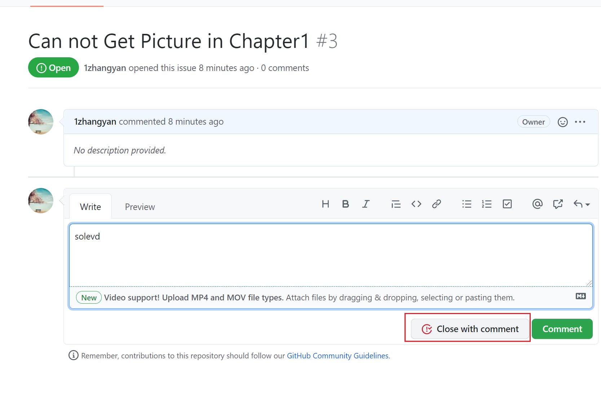

目录:
当我们发现仓库中的代码有什么疏漏或者错误的时候，我们可以提Issue，帮助小组或者自己记录要解决的问题。在仓库的Issue选项卡中，找到New Issue按钮。
按照指示填写具体的Issue内容
这样在Issue列表中就出现了需要解决的Issue，我们可以将它分配给小组成员或者自己解决，直到最后关闭这个Issue。
解决后关闭Issue。

当我们有知识或者任何有价值的事情值得分享的时候，可以创建Wiki页面。
我们把希望分享的内容记录后保存这个Wiki。这样所有人都可以看到Wiki的内容。